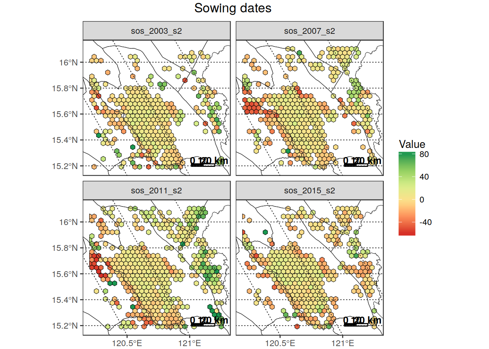

Processing passages
Here I am going to document the passages required to extract data from PhenoRice mosaics so that they can be more easily analyzed.
Preprocessing
Rename the yearly mosaics
Simple renaming of the mosaics prepared by Andy to give them more “meaningful” names
# Just define the folder containing s1_2003.tif, s2_2003.tif, etcetera and run
# `rename_year_mosaics
mosaics_folder <- "/home/lb/my_data/prasia/mosaics/by_year/2017-07-22/"
out_folder <- "/home/lb/my_data/prasia/mosaics/by_year"
rename_year_mosaics(mosaics_folder, out_folder)Create single files containing time series for each parameter
Build multi-band files containing the full time series for each PhenoRice output of interest to facilitate access to data
# Folder containing the mosaics by year and parameter (e.g., sos_1_2016, sos_2_2016, etc)
# # Note we are using the "renamed" ones obtained after applying "rename_year_mosaics"
mosaics_folder <- "/home/lb/my_data/prasia/mosaics/by_year/"
outfold <- "/home/lb/my_data/prasia/mosaics/ordered"
patterns <- c("sos", "eos", "pos", "cumevi", "veglgt", "totlgt", "nseas")
create_ordered_tiffs(mosaics_folder, patterns, out_folder )Automatic subsetting and masking on regions of interest
To speed-up things, its better to prototype the analysis on selected areas, and then extend it. Therefore, here is a way to easily extract and mask the data on a region of interest. Note that this is heavily parallelized: using a PC with many cores will speed-up things considerably ( there is an hard-coded limit to 8 cores at the moment, but I could remove it). On small areas, this is fast, but on larger ones it takes a while to re-save the tiffs. I’ll see if I can improve this.
# ____________________________________________________________________________
# set input and output folders ####
mosaic_folder <- "/home/lb/my_data/prasia/Data/orig_mosaic/param_series/"
subsets_folder <- "/home/lb/my_data/prasia/Data/subsets"
make_folder(subsets_folder, type = "dirname", verbose = T)
# ____________________________________________________________________________
# define subsetting area: choose a country ####
subset_name <- "PHL"
in_country <- "PHL"
boundmask <- sprawl::get_boundaries(in_country, level = 1) %>%
sf::st_as_sf() %>%
sf::st_combine() %>%
sf::st_sf(id = 1, sf_column_name = ".") %>%
sf::st_transform(get_proj4string("/home/lb/my_data/prasia/Data/orig_mosaic/param_series/decirc/eos_decirc.tif"))
# It's also possible to mask directly on a "province":
subset_name <- "Nueva_Ecija"
in_country <- "PHL"
boundmask <- sprawl::get_boundaries(in_country, level = 1) %>%
sf::st_as_sf() %>%
dplyr::filter(NAME_1 == "Nueva Ecija") %>%
sf::st_as_sf()%>%
sf::st_transform(get_proj4string("/home/lb/my_data/prasia/Data/orig_mosaic/param_series/decirc/sos_decirc.tif"))
# boundmask <- sf::st_transform(boundmask, get_proj4string("/home/lb/my_data/prasia/mosaics/ordered/decirc/sos_02_decirc.tif"))
extract_subarea(mosaic_folder,
boundmask,
subset_name,
out_folder = subsets_folder)Now, in “out_folder/subsets/subsets_name” we have the “ordered” phenorice tiffs, subsetted and masked on the region of interest. We can work starting from that folder, now.
Let’s see some quick plots:
subsets_folder <- "/home/lb/my_data/prasia/Data/subsets/"
sosfile <- get(load(file.path(subsets_folder, "Nueva_Ecija/param_series/orig/", "sos.RData")))
boundaries <- get_boundaries("PHL", 1)
# find the bands of "s2" season
which_s2 <- which(regexpr("_s2", names(sosfile)) != -1)
sprawl::plot_rast_gg(sosfile[[which_s2[c(2,4,6,8,10)]]],
title = "SOS doy - Season 2 - Nueva Ecija",
palette_name = "RdYlGn", zlims = c(0.02,0.98), zlims_type = "percs",
outliers_style = "to_minmax", na.color = "transparent",
borders_layer = boundaries,
scalebar_dist = 20)
eosfile <- get(load(file.path(subsets_folder, "Nueva_Ecija/param_series/orig/", "eos.RData")))
NAvalue(eosfile) = -999
sprawl::plot_rast_gg(eosfile[[which_s2[c(2,4,6,8,10)]]],
title = "EOS doy- Season 2 - Nueva Ecija",
palette_name = "RdYlGn", zlims = c(0.02,0.98), zlims_type = "percs",
outliers_style = "to_minmax", na.color = "transparent",
borders_layer = boundaries,
scalebar_dist = 20)
# Extract data on a fishnet and plot as a vector
net <- create_fishnet(sosfile[[1]], cellsize = 3500, shape = "hex")
extr_data <- extract_rast(sosfile[[which_s2]], net, full_data = FALSE)##
|
| | 0%datain <- extr_data$stats %>%
# dplyr::filter(band_name == "sos_2003_s2") %>%
dplyr::filter(!is.na(avg))
borders <- get_boundaries("PHL", level = 1)
dataplot <- datain %>%
dplyr::filter(band_name %in% c("sos_2003_s2", "sos_2007_s2", "sos_2011_s2",
"sos_2015_s2"))
plot_vect(dataplot, fill_var = "avg",
borders_layer = borders,
palette = "RdYlGn",
na.color = "transparent",
title = "Sowing dates") + facet_wrap(~band_name)
Extract data in an “analysis friendly” format
The format of the sos, eos and pos parameters makes it difficult to further analyze them because:
- they use DOY, which is a “circular” variable which is difficult to use in any statistical analysis. To further add to this problem, in PhenoRice outputs we can have both positive and negative doys (at least in s1), and doys >365 (at least in s4);
- data is “artificially” subdivided in the 4 “seasons” specified in PhenoRice processing. This subdivision doesn’t make any sense from an “agronomic” point of view: we need to be able to “collapse” all data for a given area into a single time series of event occurrence (sos, pos or eos) covering the 14 years of analysis, on which we can later make statistical analysis.
To do so:
“Decircularize” the doy-year information
By “decircularize” I mean going from the DOY representation to a Julian Date representation, which has the advantage of being a continouos monotonically increasing variable.
sos, eos and pos dates are therefore here converted to a numeric variable representing the number of days elapsed since 01/01/2000. (Note however that it is always possible to go back to the date by simply “adding” the values reported to the raster to 01/01/2000)
(This passage is very slow on the full mosaics because I didn’t have time yet to optimize it, but since we need to do it only once we can live with it for the mkoment. Moreover, when working on smaller subsets it is reasonably fast, so I’ll stay like this at the moment)
in_folder <- "/home/lb/my_data/prasia/Data/orig_mosaic/param_series/orig"
out_folder <- file.path(in_folder, "decirc")
decirc_phenorice(in_folder, out_folder)Let’s mask again the de-circularized data on Nueva Ecija:
in_folder <- "/home/lb/my_data/prasia/Data/orig_mosaic/param_series/decirc"
r <- read_rast("/home/lb/my_data/prasia/Data/orig_mosaic/param_series/decirc/sos_decirc.tif")
subset_name <- "Nueva_Ecija"
in_country <- "PHL"
boundmask <- sprawl::get_boundaries(in_country, level = 1) %>%
sf::st_as_sf() %>%
dplyr::filter(NAME_1 == "Nueva Ecija") %>%
sf::st_as_sf()%>%
sf::st_transform(get_proj4string("/home/lb/my_data/prasia/Data/orig_mosaic/param_series/decirc/sos_decirc.RData")
# insos_decirc_NE <- mask_rast(r, boundmask, crop = T,
# out_filename = file.path(in_folder,"subsets/NE/insos_NE.tif"),
# parallel = T)
insos_decirc_NE <- read_rast(file.path(in_folder,"subsets/NE/insos_NE.tif"))
NAvalue(insos_decirc_NE) <- 0
summary(insos_decirc_NE[[1:8]])You see that the “dates” are more or less monotonically increasing on the different seasons, though there are some overlaps. Analyzing the seasons separately would therefore be difficult. So, it’s better to put everyting in a single array (note that here I can do this brute force, but for larger areas it will be impossible):
# get the data for three years as an array that contains all detected sos dates in Nueva
# Ecijia as a single array
insos_decirc <- get(load(
"/home/lb/my_data/prasia/Data/subsets/Nueva_Ecija/param_series/decirc/sos.RData"
))
sos = (as.Date("2000-01-01") + raster::getValues(insos_decirc[[1:24]]))
sos = sos[!is.na(sos)]
alldata = data.frame(sos = sos) %>%
as_tibble()
ggplot(alldata, aes(x = sos)) +
geom_histogram(binwidth = 8) +
scale_x_date(date_breaks = "1 year", limits = as.Date(c("2002-06-01", "2008-12-01"))) +
theme_bw() + theme(axis.text.x = element_text(angle = 45, vjust = 1, hjust = 1)) 
This clearly depicts the double seasonality of Nueva Ecjia. It also evidences the rather narrower range of detected sos in winter.
However, what I wanted to point out is that “decircularizing” the DOYS allows to analyze them more easily, becaus we can “treat” the detected sos as a whole time series of events, without having to think about to which “season” PhenoRice assigned the sos.
Aggregate to lower resolution
To be able to work with a manageable number of “pixels” over large areas, and also to create large-scale maps, it could be worthy to aggregate the results over regular grids:
in_fishnet <- sprawl::create_fishnet(insos_decirc, pix_for_cell = 21,
shape = "hex")
plot_rast(insos_decirc[[2]], in_poly = in_fishnet)
insos_decirc_5k <- extract_rast(insos_decirc,
in_fishnet,
join_geom = FALSE,
verbose = FALSE)
insos5kdata <- insos_decirc_5k$alldata %>%
dplyr::filter(!is.na(value)) %>%
dplyr::mutate(sosdate = as.Date("2000-01-01") + value,
fc = N/n_pix,
area = 2146.58*fc) %>%
dplyr::arrange(id_feat, band_n)
insos5kdata## # A tibble: 499,614 x 9
## id_feat band_n date n_pix N value sosdate fc
## <int> <int> <date> <int> <int> <dbl> <date> <dbl>
## 1 1 1 2003-01-01 1 1 1036 2002-11-02 1.00000000
## 2 1 3 2003-01-01 11 1 1193 2003-04-08 0.09090909
## 3 1 3 2003-01-01 11 2 1185 2003-03-31 0.18181818
## 4 1 3 2003-01-01 11 3 1201 2003-04-16 0.27272727
## 5 1 3 2003-01-01 11 4 1201 2003-04-16 0.36363636
## 6 1 3 2003-01-01 11 5 1201 2003-04-16 0.45454545
## 7 1 3 2003-01-01 11 6 1233 2003-05-18 0.54545455
## 8 1 3 2003-01-01 11 7 1185 2003-03-31 0.63636364
## 9 1 3 2003-01-01 11 8 1177 2003-03-23 0.72727273
## 10 1 3 2003-01-01 11 9 1145 2003-02-19 0.81818182
## # ... with 499,604 more rows, and 1 more variables: area <dbl>summary(insos5kdata$fc)## Min. 1st Qu. Median Mean 3rd Qu. Max.
## 0.002262 0.261261 0.509960 0.512619 0.763441 1.000000here we get, for each 5km cell, the average sos date estimated in the different years and seasons, the number of pixels detected within the cell from which we can compute the detected area (so that we can filter-out 5k cells where only few pixels where rice - in this case you can see that half of the 5k cells got a 50 % rice “detection”).
Again, having de-circulated the doys allows to treat all data as a continuous series. Here I plot the frequency histograms derived by considering all Nueva Ecjia cells with fc above 0.5:
insos5kdata_filt <- insos5kdata %>%
dplyr::filter(fc >= 0.5)
insos5kdata_filt## # A tibble: 258,825 x 9
## id_feat band_n date n_pix N value sosdate fc
## <int> <int> <date> <int> <int> <dbl> <date> <dbl>
## 1 1 1 2003-01-01 1 1 1036 2002-11-02 1.0000000
## 2 1 3 2003-01-01 11 6 1233 2003-05-18 0.5454545
## 3 1 3 2003-01-01 11 7 1185 2003-03-31 0.6363636
## 4 1 3 2003-01-01 11 8 1177 2003-03-23 0.7272727
## 5 1 3 2003-01-01 11 9 1145 2003-02-19 0.8181818
## 6 1 3 2003-01-01 11 10 1129 2003-02-03 0.9090909
## 7 1 3 2003-01-01 11 11 1161 2003-03-07 1.0000000
## 8 1 4 2003-01-01 2 1 1273 2003-06-27 0.5000000
## 9 1 4 2003-01-01 2 2 1281 2003-07-05 1.0000000
## 10 1 7 2004-01-01 8 4 1582 2004-05-01 0.5000000
## # ... with 258,815 more rows, and 1 more variables: area <dbl># plot the distibutioni of detected dates in cells above 50%
ggplot(insos5kdata_filt, aes(x = sosdate)) +
geom_histogram(binwidth = 8) +
scale_x_date(date_breaks = "1 year", limits = as.Date(c("2003-06-01", "2016-12-01"))) +
theme_bw() + theme(axis.text.x = element_text(angle = 45, vjust = 1, hjust = 1)) 
To analyze interannual variations, we will have however to “split” the series somewhere, but now we can decide where. Here I try with october.
years <- 2002:2016
season <- cut((insos5kdata_filt$sosdate),
breaks = as.Date(paste(years,"-01-10",sep="")),
labels = paste(years[-length(years)],years[-length(years)]+1,sep="/"))
insos5kdata_filt <- insos5kdata_filt %>%
mutate(date_fake = doytodate(datetodoy(sosdate), 2003)) %>%
mutate(season = season) %>%
dplyr::filter(!season %in% c("2002/2003", "2001/2002"))
ggplot(insos5kdata_filt, aes(x = date_fake, y = season, fill = season)) +
geom_joy(scale = 2.0) +
scale_x_date(limits = as.Date(c("2002-11-01", "2003-11-01")),
date_labels = "%b %d") + theme_joy() +
scale_fill_cyclical(values = c("gray80", "gray50")) +
ggtitle("Nueva Ecija - Interannual variation of detected SOS")
(This is just a first try: I probably have some error in the grouping, but to give you an idea)
That’s all for now. I’ll continue working on this in the next days. In particular, I plan to start working on the Rice Atlas, and also on functions to analyze temporal trends (for that, I think we’ll have to define some methods for clustering the data, or at least identify the main modes in the distribution)